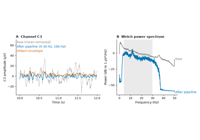

braindecode.preprocessing.Resample#
- class braindecode.preprocessing.Resample(sfreq, *, npad='auto', window='auto', stim_picks=None, n_jobs=None, events=None, pad='auto', method='fft', verbose=None)[source]#
Braindecode preprocessor wrapper for
resample().Resample all channels.
If appropriate, an anti-aliasing filter is applied before resampling. See Resampling and decimating data for more information.
Warning
The intended purpose of this function is primarily to speed up computations (e.g., projection calculation) when precise timing of events is not required, as downsampling raw data effectively jitters trigger timings. It is generally recommended not to epoch downsampled data, but instead epoch and then downsample, as epoching downsampled data jitters triggers. For more, see this illustrative gist.
If resampling the continuous data is desired, it is recommended to construct events using the original data. The event onsets can be jointly resampled with the raw data using the ‘events’ parameter (a resampled copy is returned).
- Parameters:
sfreq (float) – New sample rate to use.
Amount to pad the start and end of the data. Can also be
"auto"to use a padding that will result in a power-of-two size (can be much faster).Only used when
method="fft".window (str | tuple) – When
method="fft", this is the frequency-domain window to use in resampling, and should be the same length as the signal; seescipy.signal.resample()for details. Whenmethod="polyphase", this is the time-domain linear-phase window to use after upsampling the signal; seescipy.signal.resample_poly()for details. The default"auto"will use"boxcar"formethod="fft"and("kaiser", 5.0)formethod="polyphase".stim_picks (list of int | None) – Stim channels. These channels are simply subsampled or supersampled (without applying any filtering). This reduces resampling artifacts in stim channels, but may lead to missing triggers. If None, stim channels are automatically chosen using
mne.pick_types().n_jobs (int | str) – Number of jobs to run in parallel. Can be
'cuda'ifcupyis installed properly.events (2D array, shape (n_events, 3) | None) – An optional event matrix. When specified, the onsets of the events are resampled jointly with the data. NB: The input events are not modified, but a new array is returned with the raw instead.
pad (str) –
The type of padding to use. When
method="fft", supports allnumpy.pad()modeoptions. Can also be"reflect_limited", which pads with a reflected version of each vector mirrored on the first and last values of the vector, followed by zeros. Whenmethod="polyphase", supports all modes ofscipy.signal.upfirdn(). The default (“auto”) means'reflect_limited'formethod='fft'and'reflect'formethod='polyphase'.Added in version 0.15.
method (str) –
Resampling method to use. Can be
"fft"(default) or"polyphase"to use FFT-based on polyphase FIR resampling, respectively. These wrap toscipy.signal.resample()andscipy.signal.resample_poly(), respectively.Added in version 1.7.
verbose (bool | str | int | None) – Control verbosity of the logging output. If
None, use the default verbosity level. See the logging documentation andmne.verbose()for details. Should only be passed as a keyword argument.
- Returns:
raw (instance of Raw) – The resampled version of the raw object.
events (array, shape (n_events, 3) | None) – If events are jointly resampled, these are returned with the raw.
See also
Notes
For some data, it may be more accurate to use
npad=0to reduce artifacts. This is dataset dependent – check your data!For optimum performance and to make use of
n_jobs > 1, the raw object has to have the data loaded e.g. withpreload=Trueorself.load_data(), but this increases memory requirements. The resulting raw object will have the data loaded into memory.
Examples using braindecode.preprocessing.Resample#

Comprehensive Preprocessing with MNE-based Classes